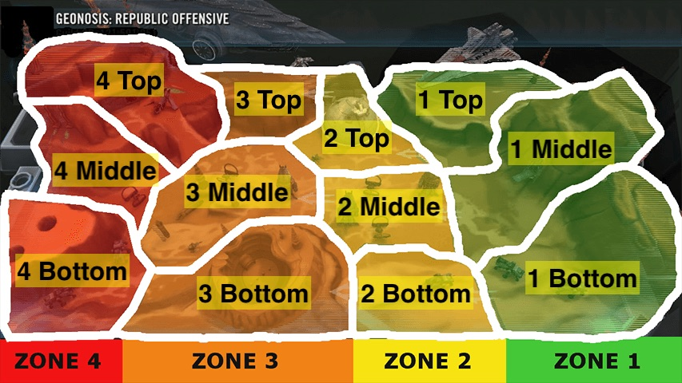

See also https://genskaar.github.io/tb_geo/html/ls.html.
Please check platoons before using any of these squads in missions. Also note that the section names are positions on the map rather than phase numbers:

The Estimated waves is an estimate of the strength of your team. 0 waves doesn't mean guaranteed failure and 4 waves doesn't mean a full clear. If you find that your performance greatly differs from the estimate, please let me know! @gorgatron#3094 Also: a clear of the fleet section is marked as 4 waves (to match the ground missions).